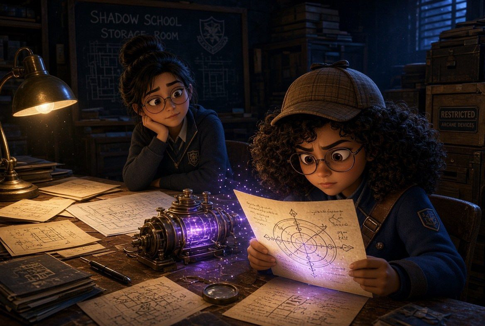
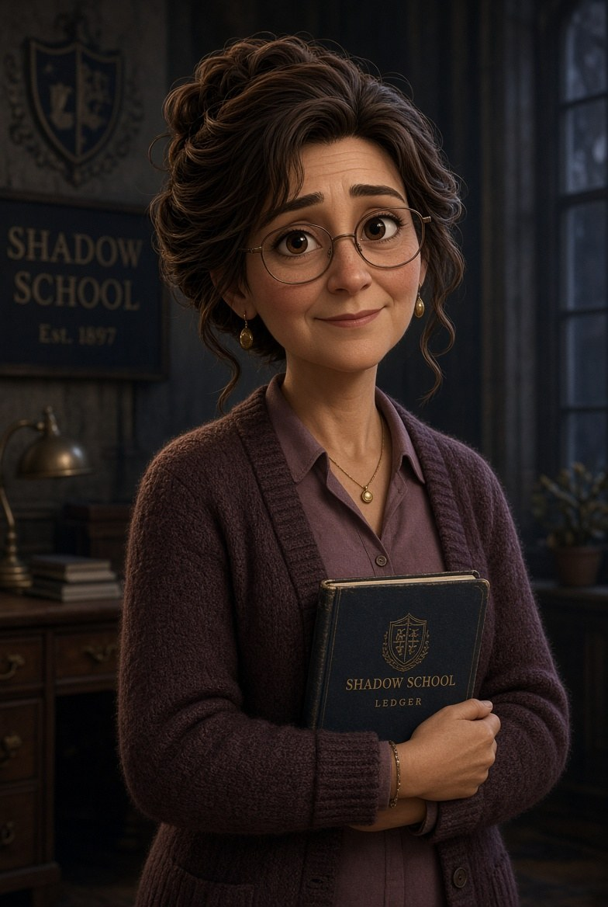
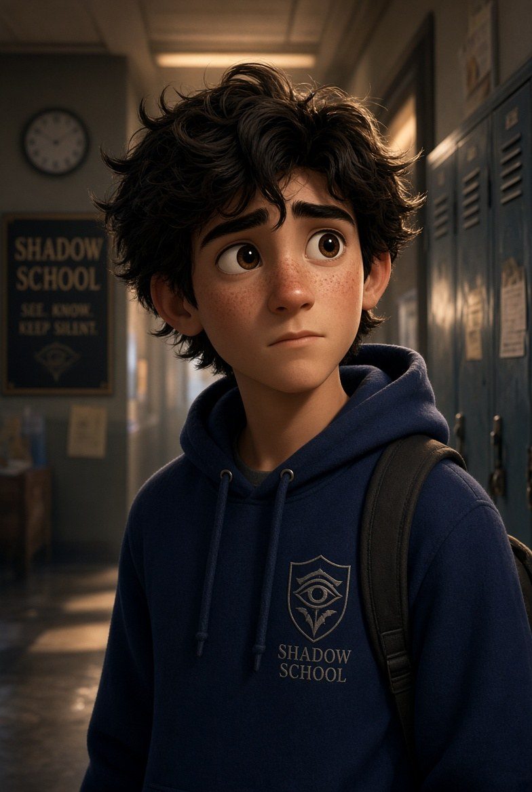
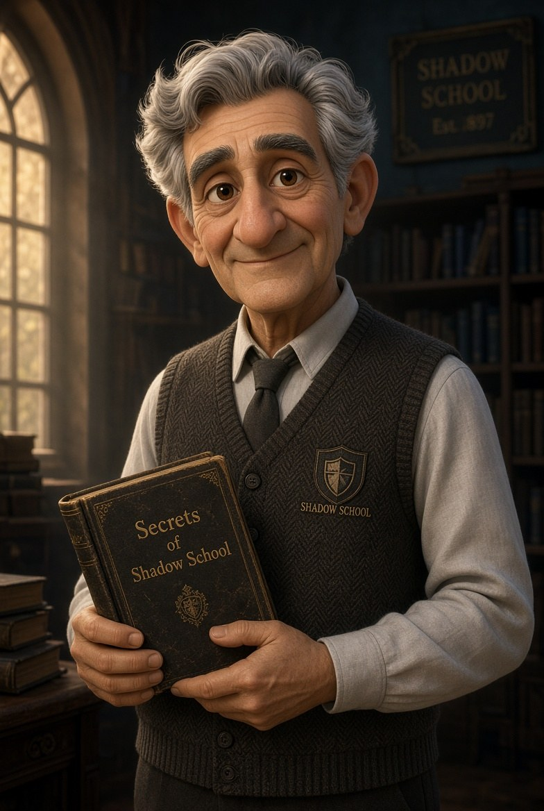
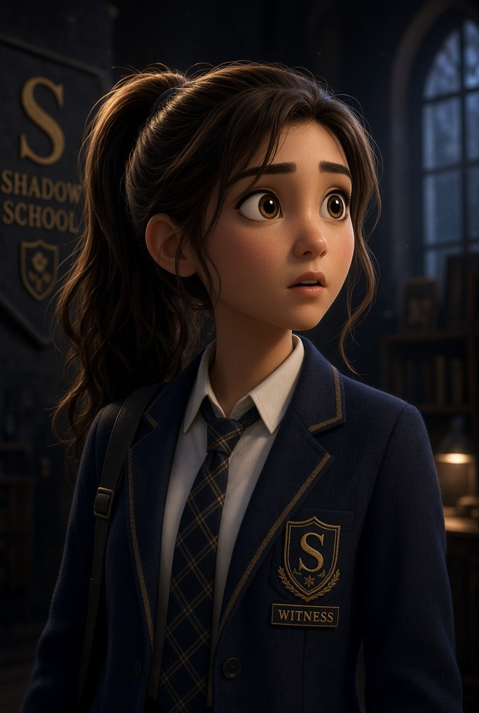

Shadow School · Grade 7 English · Reading · Lesson 08
Для учителя: Reading: Agnes’s Notes
Эта страница не связана с уроком для ученика. Домашка в оригинале была — четыре задания внутри урока, инструкции на английском. Аудио не присылали; в Arena заметки Агнес озвучивал браузер — я оставила британский голос (en-GB) на четырёх классных заметках.





Как я сопоставила фото с героями
- Сцена в кладовой — герой урока и компактная картинка над классной и домашней миссиями. Две девочки: Junior Investigator и Agnes (так подписано и в оригинале).
- Женщина с «Shadow School Ledger» — Professor Voss, science teacher. В тексте Voss — «he» («he always crosses his capital I»). На фото — женщина. Текст я не меняла; если нужно согласовать местоимения, напишите.
- Мальчик в худи у шкафчиков — Theo Hale, ученик, библиотека. На шевроне худи — глаз, это хорошо стыкуется с eye-symbol note.
- Пожилой мужчина с книгой «Secrets of Shadow School» — Mr Abernathy, caretaker. В тексте ключ он записывает в key ledger; на фото у него другая книга.
- Девочка в пиджаке с бейджем WITNESS — Lila Moreau, ученица, music room, единственная свидетельница с одним отчётом.
Ключи · Class Mission
1. Match (главный вопрос заметки)
- The key tag → The spare key
- One shadow? → Three ghosts — or one
- The folded eye → The eye-symbol note
- Four movements → The spare key
2. Highlight — 7 фраз too / enough
too dark; small enough; too close; far enough apart; too thin; neat enough; enough time.
Отвлекающие: very quietly, brown coat, almost together, very soon, rather strange, all at once, really odd.
3. Useful information
- Note 01 The key tag — только key
- Note 02 One shadow? — только ghosts
- Note 03 The folded eye — только eye
- Note 04 Four movements — key и ghosts
4. Connect details
- Received the spare key from Agnes → Mr Abernathy
- Heard three voices near the music room → Lila Moreau
- Owned the blue notebook with the folded note → Theo Hale
- Always crosses a capital I → Professor Voss
Ключи · Homework
A. Timeline (раньше → позже)
- 4:00 The closed ink bottle
- 4:05 One note, three times
- 4:09 The key ledger
- 4:11 An older eye
- 4:14 The lamp test
B. Grammar
- The ink was too faint to read.
- Lila was careful enough to hear the echo.
- The key was too small for the archive door.
- Voss did not write clearly enough.
- There were too many shadows for one lamp.
- The lock was small enough for the cabinet. (шестой пункт я добавила из заметок, чтобы в задании было 6 предложений, как в наших правилах.)
C. Compare (заметки h1–h4; lamp test сюда не входит)
- 4:00 closed ink bottle → Professor Voss · supports
- 4:05 one note, three times → Lila Moreau · explains
- 4:09 key ledger → Mr Abernathy · challenges
- 4:11 older eye → Theo Hale · supports
D. Conclusions
- Mr Abernathy received the key, but we do not know if it was returned.
- Three sounds and shadows are not proof of three ghosts; echoes and lamps may explain them.
- The note was in Theo’s notebook, but its writer is still unknown.
Ключи к грамматике сверены с правилом too + adjective и adjective + enough. Противоречий в оригинале не нашла.
Что исправлено относительно Arena
- Один ключ
tutorcall-shadow-school-agnes-notes-v1, сохранение при каждом изменении, «↺ Начать заново» с русским подтверждением. - Домашка открывалась только после всех классных заданий, а следующие шаги — только по очереди. Теперь всё видно сразу.
- В грамматике и выводах правильный вариант часто стоял первым, проверка шла по номеру. Теперь варианты перемешиваются, проверка по тексту, при ошибке правильный ответ не показывается.
- Порядок пяти полевых заметок запоминается, сброс перемешивает заново.
- Шток с Pexels и маленькие SVG-портреты заменила вашими фото.